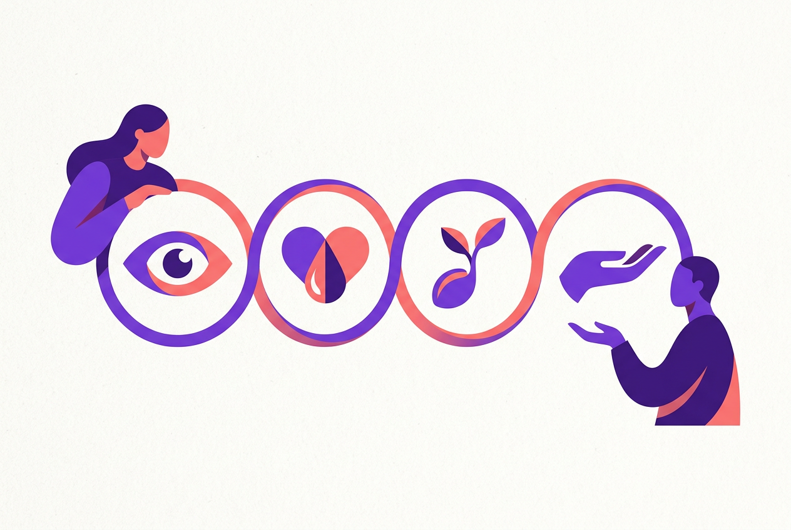
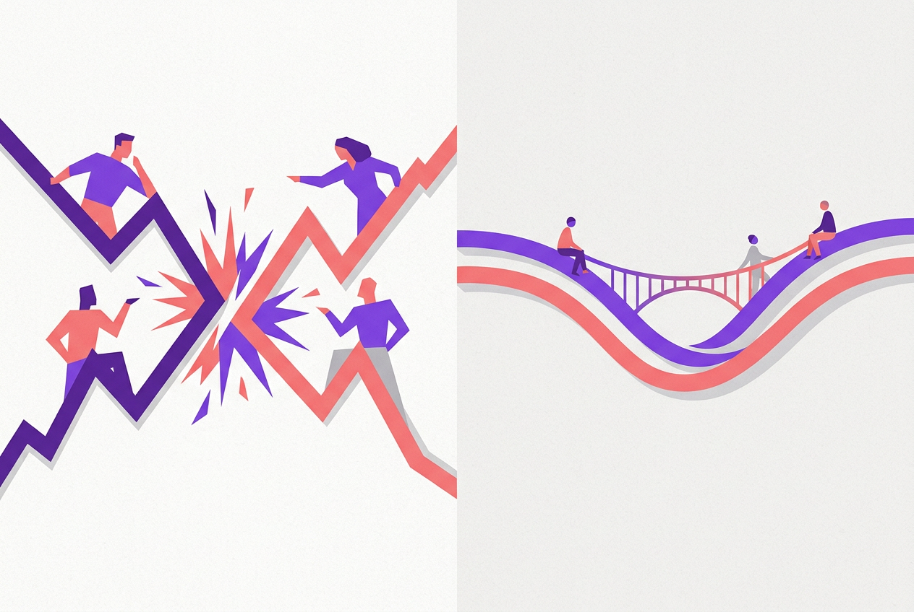

⚠️ 免责声明：本章为心理学通识科普，仅供心理健康教育与参考，不构成心理咨询、诊断或治疗建议，不能替代精神科医师与执业心理咨询师的专业判断。非暴力沟通（NVC）是 Marshall Rosenberg 创立的商业化沟通框架（书籍体系），本章如实标注其来源性质，相关疗效证据以同行评审研究为准。如你或身边人处于心理危机，请立即拨打 12356 心理援助热线或前往医院精神心理科；遭遇家庭暴力请拨打 12338 或 110——沟通技巧绝不能替代对暴力的安全应对。各节观点均标注权威来源，以来源原文为准。
本章目标（约25分钟）：学完你能——①说清"语言暴力"的四种日常形态，认出自己惯用的那几种；②掌握 NVC 四要素：观察（不评论）、感受（不想法）、需要（不策略）、请求（不命令）；③用感受词表与需要清单扩充自己的"情绪词汇库"；④把"你总是……"式的指责句现场翻译成四步表达；⑤在职场、家庭、伴侣三类场景套用模板；⑥理解 NVC 处理愤怒的四步法；⑦避开四个最常见的翻车点——机械套用、期待对方配合、把 NVC 当顺从、压抑而非表达愤怒。
怎么用本章：NVC 四步是全书被引用最多的工具（第6-18章的场景课会反复回来用它），本章需要练到"半自动"：先背第六节的模板，再拿自己最近一次真实冲突做翻译练习。提醒：NVC 是一种表达与倾听的意向框架，不是咒语——句式对了但心里全是评判，对方照样听得出来。第二节到第五节各配一张对照表，建议收藏。
一、语言里的暴力：我们从小会说的那套"错话"
指责、贴标签、比较、推卸责任——日常语言如何制造对抗
NVC 的由来：Rosenberg 的问题意识
非暴力沟通（Nonviolent Communication，简称 NVC）由美国临床心理学家 Marshall Rosenberg（1934-2015）于 1960 年代创立，其思想源头包括人本主义心理学（Rosenberg 师从 Carl Rogers 传统的学者）、Gandhi 的"非暴力"（ahimsa）理念。1984 年他创立非暴力沟通中心（CNVC），1999 年出版《非暴力沟通》一书，至今被译为三十多种语言。Rosenberg 的问题意识很具体：是什么让某些人即使身处冲突也能保持善意与连接，而另一些人在最亲近的关系里却出口伤人？他的答案是：差别不在人品，在使用的语言模式——我们从小习得了一套"疏离生命的语言"（life-alienating communication），它自动运行、几乎无人察觉，却持续制造防御与对抗。
需要如实说明来源性质：NVC 是书籍与培训体系构成的商业科普框架（本课徽章体系中用 🏷 标注），不是学术心理学的诊断或治疗标准；但它的构件——"我信息"（I-messages）、情绪标注、需要取向、请求而非命令——都能在人本主义心理学、情绪研究与冲突调解文献中找到实证近亲。学它的正确姿势：当工具箱用，不当信仰用。
四种"疏离生命的语言"
Rosenberg 归纳的日常语言暴力主要有四种形态，每种都值得对号入座：①道德评判（moralistic judgments）——用标签定义人而不是描述行为："你真自私""他就是个妈宝""你太懒了"。标签的杀伤力在于它关闭了讨论：行为可以协商，人格只能开战。②比较（comparisons）——"你看看人家孩子""你同事的老公怎么就行"。比较是最隐蔽的评判，听者接收到的信息是"你不够好"，产出的从来不是动力而是羞耻与怨恨（第4章那位被妈妈拿来和表姐比的朋友，就是现场证词）。③推卸责任（denial of responsibility）——"我也不想发火，是你逼的""没办法，领导要我这么干的"。把自己行为的责任外推给对方或环境，等于宣布"我无力改变，你也无权期待"。④强人所难（demands）——不答应就有惩罚或脸色："你必须……否则……"。命令消灭选择，而消灭了选择的合作都是暂时的。
自查练习：回想你最近三次跟家人或同事的不愉快，把当时的原话写下来，标注属于哪种形态——多数人会发现，自己最顺口的恰恰是最伤的那种。NVC 的四要素，正是这四种模式的逐一对治：观察对治评判，感受对治指责，需要对治推卸，请求对治命令。
NVC 的底层假设：每个行为背后都是需要的表达
NVC 整个框架建立在一条人性假设上：人的所有言行，本质上都是在试图满足某种普遍需要——包括那些看起来很糟糕的言行。指责"你怎么又忘了"，背后的需要可能是"我需要被重视"；孩子摔门，背后的需要可能是"我需要自主空间"。Rosenberg 把这称为"需要是人生存的养料"：需要本身没有对错、人人相通（安全的需要、被看见的需要、自主的需要、连接的需要……），冲突从不发生在需要层面，只发生在满足需要的策略层面——你想用"你少加班"来满足"我需要陪伴"，我想用"我多挣钱"来满足"我需要安全感"，两个策略打架，但两个需要完全可以共存。
这个"需要-策略分离"是 NVC 最有解释力的一刀：把对话从"谁的做法对"（策略之争，零和）切换到"我们各自要什么"（需要之谈，可兼容）。第四节会给出基本需要清单；先记住结论：当你能说出需要，对方就不再需要防御你的评判。
二、要素一 · 观察：说出摄像机拍到的，不夹带评论
"你这人从来不顾家" vs "这周你有四个晚上十点后到家"——第一句话引发战争，第二句话开启对话
观察与评论的分离： Krishnamurti 的那句话
Rosenberg 在书中引用印度哲学家 Jiddu Krishnamurti 的名言作为第一要素的精神内核："不带评论的观察是人类智力的最高形式。"（"Observing without evaluating is the highest form of human intelligence."）这话听着玄，实操含义很具体：把"摄像机能拍到的事实"与"你脑子里的解读"分开。摄像机能拍到"这周你有四个晚上十点后到家"，拍不到"你不顾家"——后者是你的推论，而且几乎必然引发对方对推论的辩护，而不是对事实的讨论。
心理学依据：基本归因误差让我们习惯把别人的行为归因于人格（"他迟到=他不重视我"），把自己的行为归因于情境（"我迟到=今天实在太堵"）。观察-评论分离就是给这个自动归因装上刹车：先陈述行为，把动机推断留在自己脑子里待验证。研究"我信息"（I-message）的沟通文献也支持同一方向：以具体行为开头的信息比以人格评价开头的信息引发更少防御、更高配合度。
评论的识别特征：五类高危词
怎么判断一句话里混进了评论？抓五类高危标记词：①全称量词："总是""从不""每次""又"——"你总是打断我"（大概率不"总是"，而且对方会立刻开始找反例，对话变庭辩）；改成"刚才我说话到一半，你插了一句"。②人格标签："懒""自私""幼稚""妈宝"——标签是评论的压缩包；改成展开的具体行为："约定的洗碗这周有三次没洗。"③读心术："你就是不在乎""你故意气我"——替对方宣布动机；改成"我需要确认你的想法"。④模糊评价："你最近很过分""态度很差"——不可执行也不可辩驳；改成行为描述："我说话时你在看手机。"⑤预言："你这样下去迟早……"——恐吓式评论，直接戒。
| 评论版（引发防御） | 观察版（开启对话） |
|---|
| 你从来不管孩子 | 这学期的两次家长会都是我一个人去的 |
| 你总是迟到，一点时间观念都没有 | 我们约的三次里，你两次晚到超过二十分钟 |
| 你这人就是自私 | 昨晚最后一块蛋糕你没问我就吃了 |
| 你对工作太不上心了 | 这份报告里有四处数据没核对（我逐条列给你） |
注意：观察要具体到时间、次数、原话、行为四要素至少占一样。练习方法：把你最近想说的一句指责写下来，删掉所有高危词，改写成"摄像机能拍到的版本"——这个翻译动作本身就是 NVC 的第一块肌肉。

插画 · AI 生成 — NVC 四要素：观察 → 感受 → 需要 → 请求
三、要素二 · 感受：说出心里的天气，不是脑子的判断
"我觉得你不爱我"不是感受，是想法——感受是伤心、害怕、委屈这些天气本身
感受 vs 想法：NVC 里最细也最关键的一刀
NVC 对"感受"的定义比日常严格得多：感受是身体与情绪层面的直接体验（难过、愤怒、害怕、委屈、欣喜、疲惫），不是你对别人行为的解读与判断。检验标准一句话："我觉得"后面能换成"我认为"而句子依然成立的，就不是感受。"我觉得你不重视我"→"我认为你不重视我"——成立，所以它是伪装成感受的想法（评判）。"我觉得很失落"——"我认为很失落"不通，这才是感受。中文还有个高危结构："我觉得被……"（被忽视、被利用、被背叛）——"被"字后面接的全是你对对方行为的指控，不是你的感受；真正的感受版本是"我感到孤单和难过"。
为什么这一刀重要？因为"想法型感受"出口即开战：你说"我觉得你不爱我"，对方只能就"我爱不爱你"这个指控进行辩护——战争又开始了；你说"我最近很孤单，也有点害怕"，对方无法反驳你的孤单（那是你的内部事实），只能面对它——防御没有了目标，倾听才可能发生。这与第1章的情绪粒度研究呼应：能精确命名感受的人，情绪调节能力显著更强——NVC 相当于把这项能力用在了关系现场。
感受词表：把"不爽"拆成十种天气
多数人的日常感受词汇贫乏到只有三档："还行""不爽""超不爽"。CNVC 的感受清单（结合中文语境整理）按"需要被满足/未被满足"分两组，建议截图保存，前两周每天用一次：
| 需要被满足时 | 需要未被满足时 |
|---|
| 安心、踏实、放松 | 焦虑、担心、不安、紧张 |
| 喜悦、欣喜、温暖、感动 | 难过、失落、伤心、心凉 |
| 被重视、被看见、亲密 | 孤单、被冷落（注意：改成"感到孤单"更准确）、疏离 |
| 有干劲、充实、振奋 | 疲惫、无力、厌倦、枯竭 |
| 感激、欣赏、敬佩 | 失望、沮丧、挫败 |
| 好奇、兴奋、期待 | 愤怒、恼火、憋屈、委屈 |
| 自豪、踏实的自信 | 羞愧、内疚、尴尬、难堪 |
| 平和、笃定 | 烦躁、坐立不安、纠结 |
使用要点：①感受要配强度——"有点失落"和"非常痛苦"是两种天气，报准强度对方才知道事情多大；②同一事件常有多层感受——愤怒的底下往往压着受伤或害怕（"我恼火，底下其实是怕你出事"），说出第二层，对话深度翻倍；③别把感受当武器连珠炮（"我委屈我难过我失望我崩溃"），一两个精确的词好过一堆形容词。
四、要素三 · 需要：说出感受背后的需要，而不是要对方怎么做
NVC 的心脏：感受是仪表盘，需要才是发动机——策略可以换，需要不必争
需要 vs 策略：把"我要你少加班"还原成"我需要陪伴"
第一节点过"需要-策略分离"，这里是 NVC 最核心的一步操作。日常冲突中我们说出口的几乎都是策略（具体到人和动作的解决方案）："你以后十点前必须到家""你妈别再插手我们的事""你把手机放下"。策略的特征：①指定了谁做什么；②只有一个标准答案；③被拒绝时你会愤怒。而需要是策略底下的普遍人类需求："我需要陪伴和参与感""我需要在小家庭的决策上有边界感""我需要独处时不被打断"。需要的特征：①不指定任何具体做法；②可以有多种满足途径；③被听见时人会松动。
表达需要的两个技术要点：①把因果收回自己身上——"你十点回家，我很生气"（你是原因）改成"我很生气，因为我需要参与孩子的睡前时光"（我的需要是原因）。这不是给对方免责，而是夺回主动权：情绪的主人是你，需要的主人也是你，这才谈得上自我负责。②需要不点名——"我需要陪伴"可以有很多满足方式（你少加一天班、我们周末安排固定约会、每天睡前十五分钟不看手机……），一旦你说出的是其中一种方式，对方就只能"答应或拒绝"；说出需要本身，对方才有机会参与共创——"那你希望怎么办"从对抗问题变成了合作问题。
基本需要清单：中文语境整理版
CNVC 把普遍需要分为几大类（整理自其官方 Needs List，中文化表述）：
| 类别 | 常见需要 |
|---|
| 生存与身体 | 安全、休息、健康、食物、居所、身体活动 |
| 连接 | 亲密、陪伴、被理解、被看见、尊重、信任、归属感、接纳 |
| 自主 | 选择权、空间、独立、掌控感、边界 |
| 意义 | 成长、贡献、被需要、价值感、目标、学习 |
| 玩耍与平和 | 乐趣、幽默、放松、审美、内心平静 |
| 诚实与真实 | 真诚、坦率、一致性、被如实对待 |
使用练习：拿你最近一次情绪事件（第3章情绪日志可以直接复用），做"往下挖三层"：愤怒→"我需要被尊重"→被尊重的具体含义是什么（意见被听取？劳动被看见？边界被遵守？）——挖到能说出具体需要为止。挖需要的最大障碍是羞耻："说出需要显得我很 needy（渴求）、很软弱"——NVC 的立场恰恰相反：能清楚说出需要是心理成熟与力量的标志，让对方猜才是关系里最贵的游戏（第6章"读心术陷阱"专节会回来处理这个）。
五、要素四 · 请求：具体、正向、可拒绝
请求不是命令：对方说"不"之后你的反应，暴露你刚才提的到底是哪种
好请求的四个标准
NVC 的第四要素是把需要落成一个具体请求，合格标准有四条：①具体可操作——对方看完就知道做什么。"你多关心我"不合格（什么动作算关心？）；"每周三晚上我们一起吃顿饭"合格。②正向表述——说要什么，不说不要什么。"你别再看手机了"不合格（不玩手机之后干什么？行为真空会被旧习惯回填）；"吃饭时我们把手机都放到客厅充电"合格。③可拒绝——请求与命令的分界线就在这条：对方说"不"时，你的反应是"好，那你说怎么办"（请求），还是脸色、翻旧账、惩罚（命令）。Rosenberg 的原话精神：命令的本质是"不答应就有代价"。④此时此刻可回应——"你以后要对这个家负责"无法执行；"今晚能不能你给孩子讲睡前故事，我洗个澡"可以当场答应或商量。
另有一个高阶用法：请求反馈——说完重要请求后加一句"你听到我说的是什么？"请对方复述。这不是不信任，是防止"我以为我说清楚了"：沟通研究里大量误会源于发送方高估了表达的清晰度（透明度错觉，illusion of transparency），让对方复述是最便宜的对账。
被拒绝时：请求的生死考场
请求被拒是常态（对方也有自己的需要），NVC 对被拒的处理恰恰是其精髓：把"不"翻译成对方的需要。对方说"周三不行，我得赶项目"——这不是拒绝你这个人，是ta的"完成工作的需要"与你的请求此刻冲突；回应可以是"明白，那周五晚上行吗？"或"你最近项目压力大（反映），我的需要还在，我们想个都能接受的方案？"。反之，被拒后的三种典型反应会把请求当场变回命令：甩脸（惩罚性沉默）、翻旧账（"上次你也没……"）、道德指控（"你就是不在乎这个家"）——对方学到的经验是："答应ta是息事宁人，拒绝ta是引爆战争"，此后ta的请求全是命令，你们的合作全是屈服，积怨开始复利。
一句话总结四要素的分工：观察让对话能开始，感受让对话有温度，需要让对话有方向，请求让对话有出口。缺一环，表达就退回指责、压抑或空谈。
六、四步合成：模板、场景改写与倾听版 NVC
把前三节拼成一句话——以及它在家庭、职场、伴侣现场的真实用法
万能模板与三个现场改写
NVC 四步表达模板：
"当我看到/听到……（观察，摄像机版本），我感到……（感受+强度），因为我需要……（需要，不点名做法），你愿意……吗？（具体、正向、可拒绝的请求）"
— 综合自 CNVC 官方 4-Part NVC 说明与《非暴力沟通》第6章（书籍框架）
| 场景 | 指责版 | NVC 版 |
|---|
| 家庭（孩子） | "你总是把房间弄得跟猪窝一样！" | "我看到地板上散着衣服和三个外卖盒（观察），我有点烦躁（感受），因为我需要一个能下脚的公共空间（需要）。你愿意今晚睡前把它们收拾进你房间吗（请求）？" |
| 职场（同事） | "你从来不认真看我发的方案。" | "上周方案里我标注的两个风险点，评审会上没被提到（观察），我有些担心（感受），因为我需要确认关键信息被同步到了（需要）。下次评审前，你愿意提前一天给我十分钟对一下要点吗（请求）？" |
| 伴侣 | "你心里根本没有我，就知道加班。" | "这周我们有四个晚上没一起吃过饭（观察），我感到孤单，也有点失落（感受），因为我需要跟你有专属的相处时间（需要）。这个周末挑一个晚上，只属于我们俩，可以吗（请求）？" |
改写时最容易丢的一环是请求——很多人说完需要就停了（"我需要陪伴"然后沉默瞪着对方），这不叫 NVC，叫抛包袱。请求给对话一个可操作的下一步，哪怕对方讨价还价，也比僵持好。
两个特殊场景：文字沟通与孩子
文字版 NVC。微信、邮件里的冲突比当面更高危：看不到表情与语气（第4章 Mehrabian 的正确启示——情感信息主要走非语言通道），文字天然显得比本意更冲，而"已读不回"会被脑补成最坏的动机。文字 NVC 三条军规：①高情绪的话不打字——愤怒峰值时写下的消息，存进草稿箱过夜再看，九成会被你自己删掉（第3章的暂停技术在数字时代的对应物）；②感受与需要在文字里加倍显性——当面有语气帮你传递"我是善意的"，文字里必须写明："先说明，我不是在指责，只是有点担心（感受前置）……"；③重要对话升级通道——文字往来超过三个回合还在升温，立刻提议打电话或见面："这个话题文字说不清，我们今晚当面聊好吗？"文字适合传递信息，不适合修复关系。
对孩子用 NVC。四步框架对孩子完全适用，但要按年龄降维：对学龄前儿童，感受和需要的词汇要具体化、身体化（"积木倒了，你很着急对不对？""我们需要一块平地来搭"），请求要小到一步（"我们一起把地上的车收进箱子好吗"）；对青春期孩子，最关键的改动是请求必须真的可拒绝——十几岁的孩子对"伪装成请求的命令"有雷达级的敏感度，你说"你愿意跟我聊聊吗"但心里预设了"不愿意=有秘密=更得查"，ta 会瞬间识别并关闭通道。对孩子 NVC 的长期红利在建模：你如何表达愤怒，就是孩子学到的愤怒表达模板——一个会说"我很生气，因为我需要说好的事被做到"的孩子，在学校里已经赢过了大多数只会摔门和骂人的同龄人。
NVC 的另一半：用四要素倾听别人
多数人学 NVC 只学了表达，漏了同样重要的同理倾听版：用四要素当"翻译器"，把对方的指责翻译成 ta 的观察、感受、需要、请求。对方吼"你眼里只有工作！"——翻译："ta 观察到的是我连续几周的晚归（观察），ta 感到孤单和受伤（感受），ta 需要陪伴与重要性（需要），ta 的请求可能是希望我调整时间安排（请求）"。然后用第4章的反映式倾听表达出来："这几周我回来得太晚了（帮ta说观察），你很孤单，觉得在我这里排在工作后面（命名感受与需要），是吗？"——奇迹常常在此刻发生：被翻译到需要层面的指责，火力会自动下降，因为指责的功能本来就是让需要被听见，需要已被听见，指责就失业了。
提醒顺序：先翻译倾听，再表达自己。对方情绪在高位时，你的四步表达再标准也进不去——第4章讲过"共情先于解题"，在 NVC 语境里即"同理先于诚实"（CNVC 术语：empathy before honesty）。等对方明显松下来（叹气、点头、语气软化），再切换成表达模式说自己的四步。

插画 · AI 生成 — 从"指责-防御"的对撞到"需要-需要"的连接
七、NVC 与愤怒：不是忍，是完整表达
对 NVC 最大的误解是"不能有情绪"——Rosenberg 的立场恰恰相反：愤怒要被充分表达，但要先完成翻译
愤怒的 NVC 模型：愤怒是"需要未被满足"的警报，评判是它的燃料
Rosenberg 对愤怒有一个反直觉的分析：引发愤怒的不是他人的行为，而是我们对该行为的评判——行为是导火索，评判（"他不尊重我""她就是故意的"）才是燃料。同一件事，换一种解读（"他可能真的没收到消息"），愤怒的强度会完全不同（这与第1章 ABC 理论、第3章认知重评完全同构——NVC 的愤怒观在认知行为传统里有扎实的实证近亲）。而评判底下的真相是：一个未被满足的需要。所以 NVC 处理愤怒的四步是：①停下来，什么都不做、不说（先给生理降温留时间——第3章的暂停技术）；②识别脑子里的评判（"我正在想'ta 太过分了'"）；③把评判翻译成需要（"'过分'底下，我需要什么？——我需要劳动被看见"）；④开口表达感受与需要，必要时加上请求。
关键区分：压抑愤怒≠NVC。忍下去的愤怒不会消失，会转成冷暴力、翻旧账或躯体症状（第3章"表达抑制的代价"）；NVC 主张的是愤怒的完整表达——把警报底下的信息（需要）充分、清晰地送达对方，包括强度："我现在非常愤怒，我需要你先听我说完这件事对我意味着什么。"愤怒在 NVC 里不是要被消灭的敌人，而是需要被读懂的信使。
一个完整示范：从炸毛到送达
现场：伴侣答应倒垃圾，第二天你发现垃圾还在门口，这是本月第四次。
脑内评判（不说出口）："又是这样，说话当放屁，这个家就我一个人在管。"
①停：深呼吸两轮，离开现场去倒水（生理降温，第3章）；
②识评判："我在想'ta 根本不在乎这个家'"——注意，这是解读不是事实；
③挖需要：在乎底下是什么？→"我需要说好的事被做到（守信），我需要家务被共同承担（伙伴感）"；
④开口（NVC四步）："垃圾还在门口，这是这个月第四次了（观察）。我很恼火，也很疲惫（感受），因为说好的事情被做到，对我来说是'我们一起在经营这个家'的证明（需要）。今晚开始，倒垃圾这件事如果你做不到，我们重新分配，你选一个你确定能做到的家务，好吗（请求）？"
对比指责版（"你又忘了！你就是懒！"）：信息量更少、防御更多、问题解决率为零。NVC 版不保证对方立刻配合（ta 也有情绪和需要），但它把对话放在了"能解决事情"的轨道上——这已经胜过绝大多数真实吵架。
八、四个最常见的翻车点
学了 NVC 反而把关系搞僵的人，几乎都栽在这四处
翻车一：机械套用——"NVC 腔"比不说更气人
新手最典型的翻车：把四步当成必须逐字念完的仪式——"我观察到你说'算了'这两个字的时候音量下降了约三分贝，我感到有些许的失落与孤单，因为我需要情感层面的连接……"对方听完只想报警。问题的本质：NVC 传递的是意向（我想连接而不是指责），句式只是脚手架。日常口语里，四步常常压缩成一句自然的话："垃圾又没倒，我有点上火了——说好的事被做到对我挺重要的。今晚能不能定个你肯定做得到的？"要素齐全，人话浓度正常。进阶标准是忘掉句式记住意识：开口前 0.5 秒闪过四个检查点（我在说事实还是评判？我知道自己什么感受吗？我到底需要什么？我要的具体动作是什么？）——检查通过，怎么说都行。
另一个亚种是"翻译腔滥用"：对方正常说话，你非要反映式回应（"你听起来感到有些沮丧？"）——在低冲突日常里这会显得古怪甚至居高临下。工具跟着场景走：NVC 四步主要用在高情绪、高风险、有积怨的对话里；平时闲聊，正常说人话。
翻车二：期待对方也配合——"我都 NVC 了，你怎么还这样"
学了四步，第一次实战，对方没有感动落泪而是继续阴阳怪气——于是你更愤怒了："我都好好说话了！"这里要纠正一个根本性的误解：NVC 不是控制对方的新技术，是管理自己表达的框架。你能控制的只有：我说的是观察还是评判、我有没有把感受说清、我有没有挖到真实需要、我的请求是否具体——对方如何回应，取决于ta的当天状态、你们的关系存量（第6章"情感账户"）、ta自己会不会这套语言。对方不用 NVC 回应你，恰恰是常态；此时切换第4章的翻译式倾听（把ta的反击翻成需要），而不是升级指控（"我都按四步说了你还想怎样"——注意，这句话本身是评判+命令，NVC 浓度归零）。
合理预期管理：NVC 第一次用通常"效果平平但没有更糟"，用一个月后你注意到的是自己的变化——炸毛频率下降、能说出需要了、吵架能在半路拐弯；关系层面的变化（对方软化、对话变深）通常需要更久，且需要双方至少一方稳定输出。把它当健身，别当止痛药。
翻车三：把 NVC 当顺从——"非暴力"不等于不设边界、不拒绝
一个危险的误读：学了 NVC 的人开始不敢说"不"、不敢表达愤怒、在明显越界的行为面前继续"共情对方的需要"——把非暴力沟通变成了非暴力忍受。必须澄清：NVC 的"非暴力"指的是语言不攻击人格、不威胁惩罚，从来不是指放弃立场与边界。恰恰相反，NVC 式的拒绝与 NVC 式的愤怒（第七节）都是完全合法且被鼓励的："我不能答应这个安排（拒绝），因为本周我已经有三个截止日期，我需要保证交付质量（需要）。下周二之后我可以接（替代方案）。"——温和而清晰。尤其对第13章会讨论的操控型关系：面对试探底线、情感勒索的对象，四步表达之后紧跟的必须是坚定的边界动作——对操控者共情而不设防，等于给吸血鬼开门。NVC 适用于双方都想把关系处好的对话；单方面的善意不是 NVC 的适用范围，是第13章的识别课题。
三周练习路线图：从翻译旧账到实战
NVC 是典型的"看会了、用不出来"技能——冲突现场肾上腺素一上来，四步瞬间蒸发，嘴自动切回"你总是"。解法是把练习放到零压力的复盘场景里，让肌肉记忆先于实战建立。三周路线图：第一周（只练翻译，不开口）——每天挑一件当天让你有情绪的小事，写在备忘录里做"四步翻译"：把想说的指责翻译成观察/感受/需要/请求四行字。不发给任何人，纯私人练习。一周后回看，你会发现自己的高频需要（多数人集中在"被尊重""被看见""自主空间"三样）——这就是你的需要画像。第二周（低风险实战）——挑两个"赌注最小"的对话用上：对同事的小请求（"这份材料周三前要，你来得及吗？不行我们调顺序"）、对孩子的日常协商。低风险场景翻车也无代价，重点是体验"说完四步对方没有防御"的正反馈。第三周（中风险实战+复盘）——选一个积压已久但还没到爆发级的话题（家务分配、手机使用、周末安排），提前把四步写下来（写下来极其重要，现场想不起来），选对方状态好的时机说。说完无论效果如何，当晚复盘三问：我哪一步最卡（通常是感受或需要）？对方的第一反应是防御还是倾听？如果重来，哪句话我会改？
配套两个日常微练习：①感受词打卡——每天睡前用一个精确的感受词（不许用"还行""烦"）描述今天的一个时刻，两周后情绪词汇量翻倍（第1章情绪粒度训练的延续）；②翻译他人——听到任何人的抱怨（同事吐槽、家人发牢骚、网上骂战），在心里做"ta 的需要是什么"的翻译练习。这个练习的隐藏收益巨大：你会逐渐在最难听的指责里自动听到需要——这是共情能力的底层升级，也是第12章冲突调解、第16章共情训练的预备役。
常见疑问快答
问：对领导也能用吗？会不会显得矫情？——能用，但要"去术语化"：领导不需要知道你在用 NVC，只需要收到"事实+影响+方案"结构的信息（观察+需要+请求的职场变体），这在向上沟通里本来就是加分项（第9章详述）。问：对方完全不吃这套、继续攻击怎么办？——连续两三次四步表达+翻译倾听后对方仍以攻击回应，说明问题不在沟通技术而在关系结构：可能是第13章的操控模式，需要的是边界与自保，而不是更多的共情。问：NVC 和自我压抑怎么区分？——检验标准看表达完整性：你的观察、感受、需要、请求是否都送达了对方？送达了叫非暴力，咽回去叫压抑——形式温和而内容缺席，恰恰是 NVC 反对的"戴着面具的沉默"。问：家人嘲笑我"说话像教科书"怎么办？——正常反应，别辩解别布道，继续用两周；语言的改变最终靠效果说话，当他们发现吵架开始能"拐弯"了，嘲笑会自己消失。
翻车四：谣言粉碎——关于 NVC 的四个流行误解
误区一："NVC 有严格实证支持，是心理学标准疗法。"——不准确。NVC 是 Rosenberg 的书籍与培训框架（商业科普 🏷），其构件（我信息、情绪标注、需要取向）有实证近亲，但"NVC 整体疗效"的高质量随机对照研究仍然有限；本课如实标注，不夸大。误区二："NVC 就是永远温柔、不发火。"——错。第七节已论证：NVC 主张愤怒的完整表达，压抑恰恰是它反对的；温柔是形式，诚实才是内核。误区三："学会四步就能说服任何人。"——错。NVC 的目标是连接与相互理解，不是赢；把它当说服术用，动机层面的操控味对方闻得到（翻车二）。误区四："对方不讲 NVC，这套就没用。"——错。翻译式倾听（第六节）正是为"对方不讲"设计的：你说人话，ta 说气话，你把气话翻成人话——单方面就能降低冲突温度，这也是它比"双方共同上课"类方法实用性强的地方。
九、本章自测
能用大白话讲出来，才算真的学会了
📋 理解性自测（讲给朋友听试试）
- NVC 由谁创立、核心问题意识是什么？为什么本课把它标为"商业科普"框架？
- 四种"疏离生命的语言"是什么？各自对治的 NVC 要素是哪个？
- "需要-策略分离"指什么？为什么说冲突只发生在策略层面？
- Krishnamurti 那句"不带评论的观察"在实操中什么意思？
- 基本归因误差如何让我们自动评论？观察-评论分离怎么给它装刹车？
- 评论的五类高危词是什么？各举一例并改写成观察版。
- 合格观察的"四要素至少占一样"指什么？
- "我觉得"后面接什么才是真感受？"被"字句为什么高危？
- 为什么"想法型感受"出口即开战？
- 说出至少六组感受词（满足/未满足各三个）。
- 感受为什么要配强度、为什么愤怒底下常有第二层感受？
- 需要与策略的三个区分特征是什么？
- "把因果收回自己身上"是什么意思？举一例改写。
- 基本需要清单有哪六大类？各举两个需要。
- 好请求的四个标准是什么？请求与命令的分界线在哪里？
- "请求反馈"（让对方复述）防的是什么认知偏差？
- 请求被拒后的三种命令化反应是什么？"把'不'翻译成需要"怎么操作？
- 默写四步模板，并把你最近一次真实指责改写成 NVC 版。
- 倾听版 NVC 怎么用四要素翻译对方的指责？为什么说"被翻译的指责火力会下降"？
- "同理先于诚实"是什么意思？什么时候切换成表达模式？
- Rosenberg 的愤怒模型里，导火索、燃料、真相分别是什么？
- NVC 处理愤怒的四步是什么？为什么压抑愤怒不算 NVC？
- "NVC 腔"为什么比不说更气人？进阶标准"忘掉句式记住意识"指什么？
- 为什么不能期待对方配合？合理的效果预期时间线是什么？
- NVC 与顺从的区别是什么？面对操控型对象，四步之后必须跟什么？
- 本章四个谣言误区各自的纠正要点是什么？
📌 本章要点速览：NVC=Rosenberg 创立的表达与倾听框架（商业科普性质，构件有实证近亲）；四种疏离语言：评判、比较、推卸、命令；底层假设：一切言行都是需要的表达，冲突在策略层不在需要层；四要素——观察（摄像机版本，删"总是/从不/标签/读心"）、感受（"我觉得"换"我认为"仍成立=想法不是感受；报强度，挖第二层）、需要（不点名做法，因果收回自己；策略可以换需要不必争）、请求（具体+正向+可拒绝+当下可回应；被拒后翻译成对方的需要）；模板："当我看到…我感到…因为我需要…你愿意…吗？"；倾听版：把对方的指责翻译成 ta 的四要素，同理先于诚实；愤怒四步：停→识评判→翻需要→完整表达（压抑≠NVC）；四翻车：NVC腔（意向>句式）、期待对方配合（管自己不管对方）、当顺从用（拒绝与边界完全合法，操控对象见第13章）、当说服术（目标是连接不是赢）。